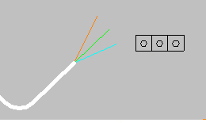
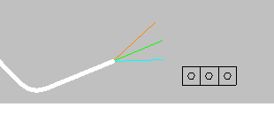

Creating connector views
You can use the Connector Drawing View command to place a drawing view of the connector associated with the selected branch of the wire harness. The connector drawing view is a regular drawing view with all drawing view options available. By default, auto caption is on and defaults to the component name. As with other drawing views, you can display and edit drawing view properties for the connector drawing view.
When created, the connector view is positioned associatively to the branch used to create the view.

The connector view tracks edits that change the position of the branch and maintains the position relative to the branch.

How do I
Create a connector drawing viewCreate a connector table
Learn more
Creating connector tablesLook up more details
Connector Drawing View commandConnector Table command
Connector Table Properties dialog box
Related Topics
Connector Table command barOptions tab (Connector Table Properties dialog box)
Update a connector table